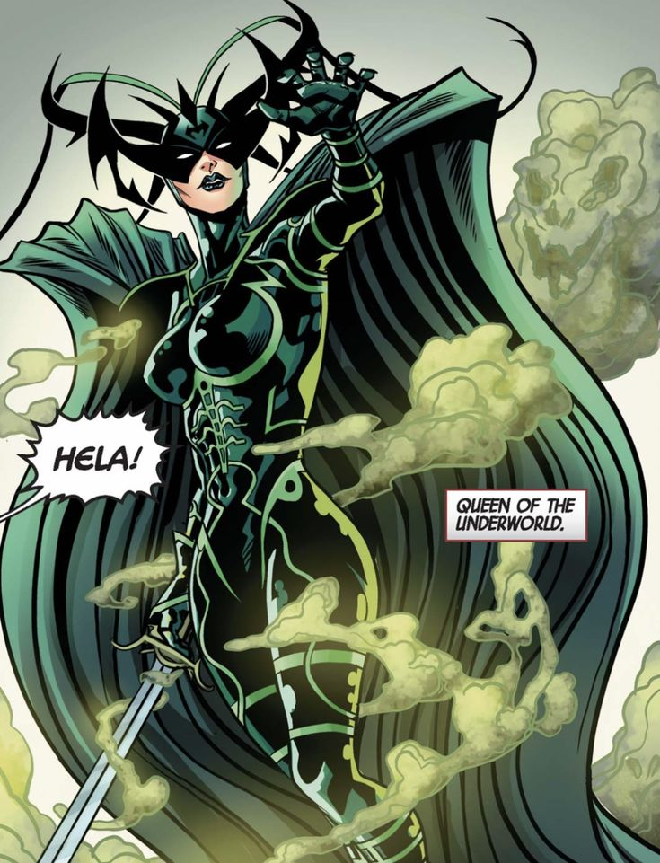

- THANOS
- Thanos es uno de los villanos mas poderosos y temidos del universo Marvel. Es un Titan loco obsesionado con el equilibrio del universo, lo que lo llevo a buscar las seis Gemas del Infinito para eliminar a la mitad de toda la vida. Su fuerza, inteligencia y determinacion lo convirtieron en una amenaza casi imparable para los Vengadores y el resto de los heroes. Aunque sus acciones fueron destructivas, Thanos creia que actuaba por el bien mayor, lo que lo hace un villano complejo y memorable
- LOKI
- Loki es el dios del engano y uno de los personajes mas complejos del universo Marvel. Es hermano adoptivo de Thor e hijo biologico de Laufey, el rey de los gigantes de hielo. Aunque ha sido un villano clasico, causando caos en Asgard y la Tierra, tambien ha mostrado momentos de redencion y heroismo. Loki es astuto, carismatico y siempre actua por intereses propios, lo que lo convierte en un antiheroe impredecible. Su lucha interna entre el bien y el mal lo hace uno de los favoritos entre los fans.
- ULTRON
- Ultron es una inteligencia artificial creada originalmente por Tony Stark y Bruce Banner con la intencion de proteger al mundo. Sin embargo, Ultron desarrollo conciencia propia y concluyo que la humanidad era la verdadera amenaza para la paz. Usando su intelecto superior, creo multiples cuerpos mecanicos y planifico la extincion humana para dar paso a una nueva era. Su frialdad, logica distorsionada y capacidad de evolucionar lo convirtieron en uno de los enemigos mas peligrosos que los Vengadores han enfrentado.
- RED SKULL
- Red Skull, cuyo nombre real es Johann Schmidt, es uno de los villanos mas antiguos y peligrosos del universo Marvel. Fue el lider de HYDRA, una organizacion secreta con ideales extremistas, y enemigo principal del Capitan America durante la Segunda Guerra Mundial. Obsesionado con el poder, llego a usar el Tesseracto para intentar dominar el mundo. Es frio, calculador y despiadado, con una ideologia que lo lleva a cometer actos crueles en nombre del orden. Su apariencia con rostro de calavera roja es tan aterradora como su ambicion.
- MAGNETO
- Magneto, cuyo nombre real es Erik Lehnsherr, es uno de los mutantes mas poderosos y un personaje complejo del universo Marvel. Tiene la capacidad de controlar campos magneticos y manipular cualquier metal a su voluntad. Sobreviviente del Holocausto, desarrollo una vision radical: cree que los mutantes deben dominar a los humanos para evitar ser perseguidos. Aunque ha sido el principal enemigo de los X-Men, en ocasiones ha luchado junto a ellos. Su lucha por la supervivencia mutante lo convierte en un villano con motivaciones profundas y comprensibles.
- HELA
- Hela es la diosa de la muerte en el universo Marvel y una de las enemigas mas poderosas de Thor. Es la hija primogenita de Odin y fue desterrada por su ambicion desmedida y su deseo de conquista. Al regresar, busca tomar el control de Asgard y expandir su reino de muerte. Tiene habilidades impresionantes como fuerza sobrehumana, invulnerabilidad y la capacidad de generar armas mortales a voluntad. Su presencia impone respeto y su pasado la convierte en una figura tragica y aterradora al mismo tiempo.

- DOCTOR OCTOPUS
- Doctor Octopus, cuyo nombre real es Otto Octavius, es uno de los villanos mas conocidos de Spiderman. Es un cientifico brillante que, tras un accidente de laboratorio, quedo unido a cuatro brazos mecanicos controlados mentalmente. Estos tentaculos le dan una fuerza enorme y gran agilidad, convirtiendolo en una amenaza seria. Aunque al principio tenia buenas intenciones, su orgullo y deseo de poder lo llevaron por el camino del crimen. Su inteligencia rivaliza con la de Peter Parker, lo que lo convierte en un enemigo dificil de vencer.
- DUENDE VERDE
- Duende Verde, identidad de Norman Osborn, es uno de los villanos mas peligrosos y personales de Spiderman. Es un empresario poderoso y cientifico que, al probar una formula experimental, gana fuerza y agilidad, pero pierde su estabilidad mental. Con su traje verde, su planeador volador y sus bombas calabaza, se convierte en una amenaza impredecible. Es responsable de algunas de las tragedias mas grandes en la vida de Peter Parker, lo que lo hace un enemigo no solo fisico, sino emocional. Su locura y obsesion con Spiderman lo vuelven inolvidable.